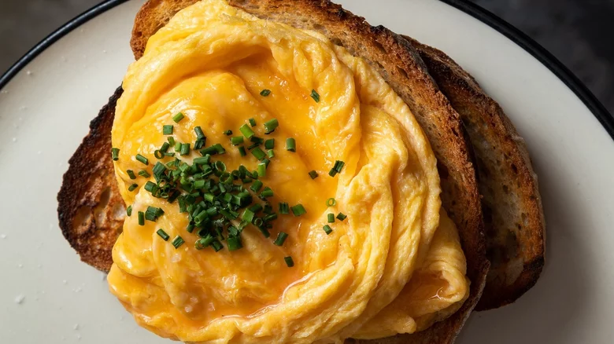

ScrambledFolded Eggs

Best start to the day - fluffy, buttery ribbons of egg.
Ingredients
- 2/3 large eggs/li>
- good splash full cream milk (or spoon of cream)
- pinch of salt
- knob of butter
- slab of fresh crusty bread
Options
- hot sauce
- fried mushrooms
- sauted greens
- chorizo
- boiled crab
- labne, roast cherry tomatoes and pistachio dukkah
- hasbrowns and bacon
How To
- Heat non stick frypan on med high till very hot. Crack eggs into bowl, add dairy and whisk with fork or mini egg which vigoursly. Till no whites are left and mixture is light and foamy.
- Sizzle butter in pan till melted and bubbling. Add pinch of salt to egg mix at last second and pour into pan.
- Quickly, use spatula to pull edges of egg into center as it cooks. Using free hand to move pan around to spread mioxture into the gaps made.
- Remove from heat when eggs look not quite cooked, they continue to cook to perfection.
- Serve instantly on toasted bread with whatever sides you choose and a mug of filter coffee.